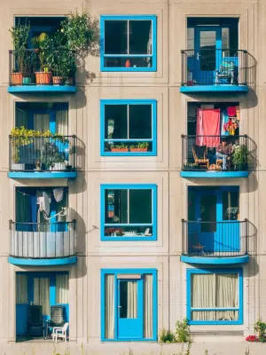

Growing plants,
one season at the time
Easy houseplants, simple care routines, and lessons learned through the changing seasons.
Featured Posts

Simple Wall Garden Ideas for Small Balconies
Vertical gardening guide with simple ideas for small balconies and patios. Learn how to grow herbs and plants vertically to save space and create a lush balcony garden.
Read more →
Houseplants That Love a Summer on the Balcony
Find the best houseplants for balconies and patios. These indoor plants love summer outdoors and transition back inside without stress.
Read more →

Seasonal Care

Container Gardening Ideas for Small Balconies and Patios
Learn how to grow herbs, flowers, and plants in pots to create a calm, flexible garden in any city home.
Read more →